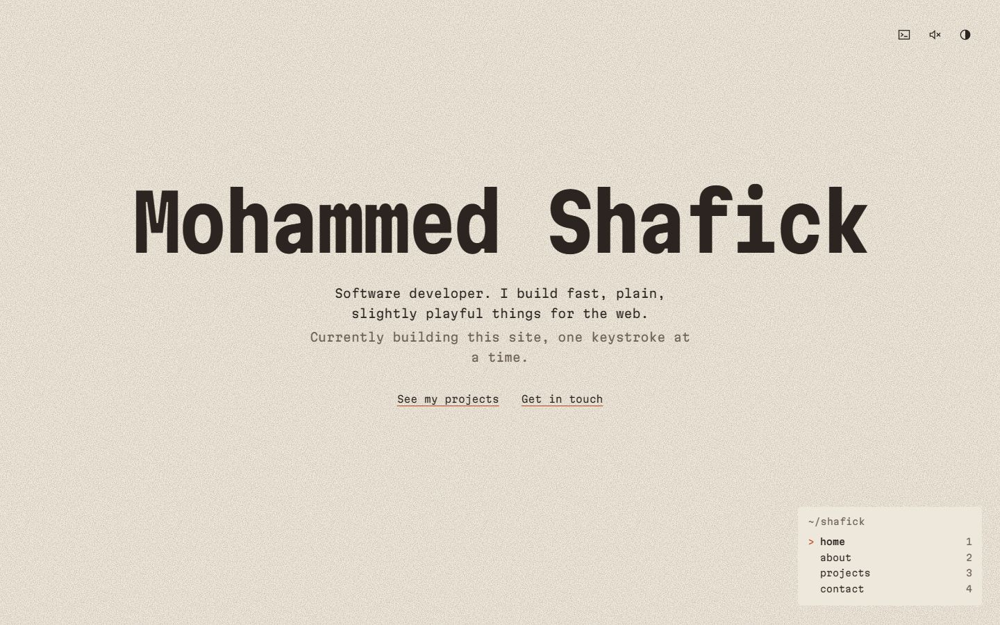
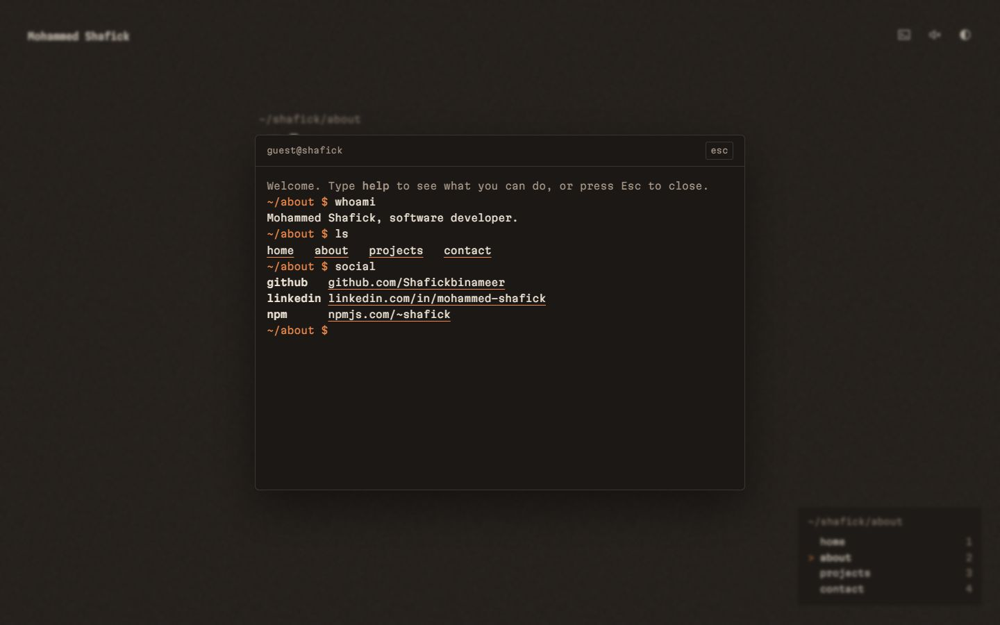
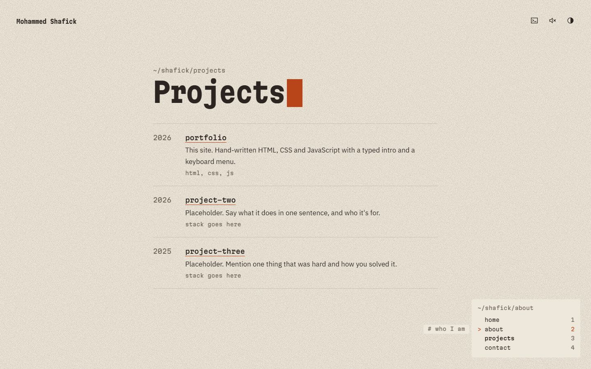

portfolio
This site. A personal portfolio that works like a terminal printed on warm paper, built by hand with plain HTML, CSS and JavaScript: no framework and no build step.
- year
- 2026
- role
- design and code
- stack
- html, css, javascript
- links
- live site, code on github

Why I built it
I wanted a portfolio that feels like the tools I use every day: a terminal, a keyboard, a blinking cursor. Most developer sites look the same, so I gave this one its own texture, its own sounds and a menu you can drive from the keyboard.
How it works
- A small typing engine reveals letters in step with the screen refresh, so typing stays smooth.
- The menu behaves like a terminal program: a status line, a sliding marker, and j / k to move through it.
- A real command line opens with the / key, with history, Tab completion and a few hidden extras.
- Typing sounds are made in the browser with the Web Audio API, without any audio files.
- The pixel cursors and paper grain are drawn in code; the only images are the logo and these screenshots.


What was hard
Keeping it smooth. My first version of the intro moved the name by re-laying out the page on every frame, and it stuttered. Moving it with a GPU transform instead made it glide. Sound had its own catch: browsers only allow it after a visitor's first click or key press, so the site waits for that before it makes a sound.
$ cd .. back to all projects